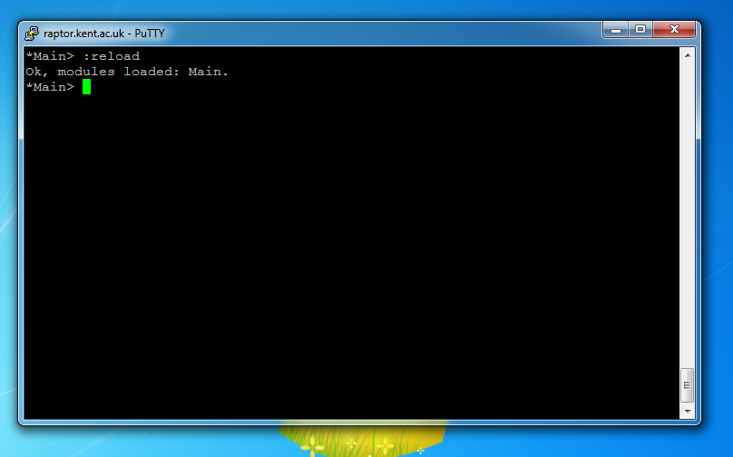

The version of GHCi on raptor is not the lastest version, so edits made to the Test.hs file will have to be made using an external program, such as Sublime and Notepad.
To make modifications to the Test.hs file:
1) Open the Test.hs file in a program, such as Notepad++ or Sublime
2) Edit the Test.hs file. Save any changes made.
3) In the EHi, enter the command :reload to load the Test.hs file back.
